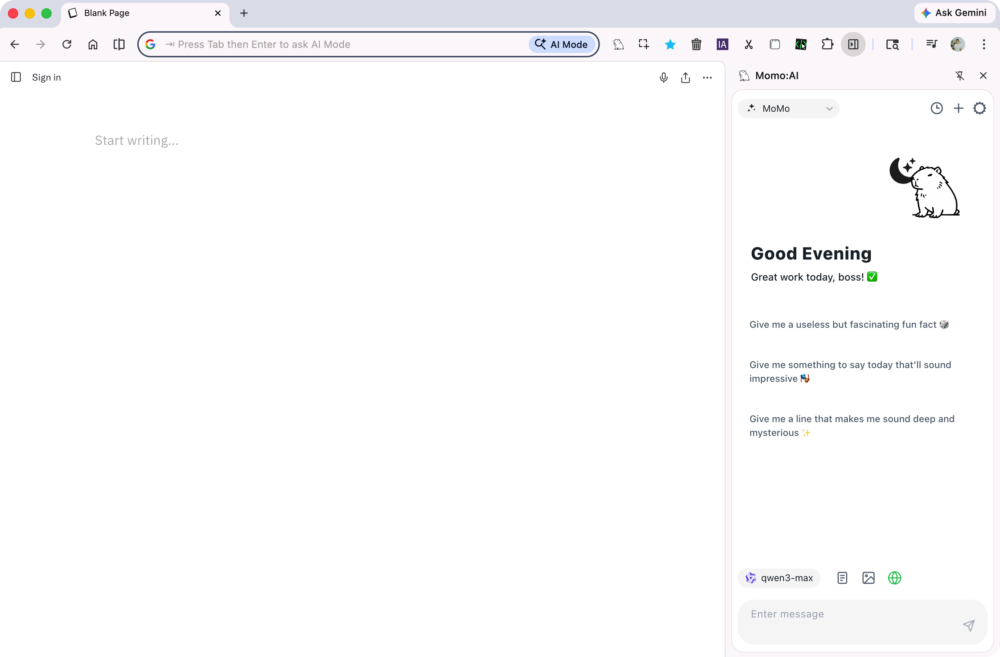

介紹
什麼是 Momo AI？
Momo AI 是一款 Chrome 瀏覽器擴充功能，提供優雅的 AI 聊天側邊欄體驗。你可以在瀏覽任何網頁時，隨時開啟側邊欄與 AI 對話，無需切換分頁或開啟其他應用程式。
Momo AI 的核心理念是「友善且實用」——它不僅是一個聊天介面，更是一個整合了聯網搜尋、頁面擷取、圖片理解與深度推理的全方位 AI 助手。

核心特色
🤖 多 AI 供應商支援
支援 13 種 AI 供應商，涵蓋雲端、本地模型與獨立 Agent / Gateway 類型：
| 供應商 | 類型 | 說明 |
|---|---|---|
| OpenAI | 雲端 | GPT-5.4、GPT-5.4-mini 等 |
| Google AI | 雲端 | Gemini 2.5 Flash / Pro |
| DeepSeek | 雲端 | DeepSeek Chat / Reasoner |
| Qwen（通義千問） | 雲端 | Qwen3 系列 |
| OpenRouter | 雲端 | 聚合平台，可存取多種模型 |
| Moonshot (Kimi) | 雲端 | Kimi K2.5 / K2 |
| MiniMax | 雲端 | MiniMax-Text-01 等 |
| Groq | 雲端 | 高速推理；預設 gpt-oss-120b、Llama 4 Scout 等 |
| NVIDIA | 雲端 | NVIDIA NIM 模型 |
| Ollama | 本地 | 執行本地開源模型 |
| LM Studio | 本地 | 桌面 LLM 工具 |
| Hermes | 獨立 | Agent API Server（Beta） |
| OpenClaw | 獨立 | WebSocket AI 閘道器（Beta） |
🔍 聯網搜尋
內建多種搜尋引擎整合，AI 對話中可即時查詢網路最新資訊。
📄 引用頁面內容
一鍵將當前網頁內容作為對話脈絡，讓 AI 理解你正在閱讀的內容。
💡 思考模式
啟用深度推理，讓 AI 展示完整的思考過程，適合複雜問題求解。
🖼️ 圖片理解
上傳或貼上圖片，讓支援視覺功能的模型分析影像內容。
🔊 語音朗讀
AI 回覆支援 TTS 語音朗讀，可自訂語音、語速與音調。
📝 系統提示詞管理
內建多組實用提示詞（翻譯助手、寫作助手等），也可自訂。
🌐 多語言介面
完整支援繁體中文、簡體中文與英文。
隱私與安全
- 所有設定資料透過
chrome.storage.sync在 Google 帳號間同步 - 聊天記錄僅保存在本地（
chrome.storage.local） - 不收集任何個人資料，不會將你的對話傳送到第三方伺服器（除了你選擇的 AI 供應商）